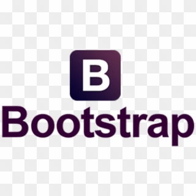
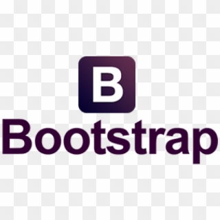

2016 - 2019
Certificate in Advanced English (CAE) - (2018/jul)
Bibliotecario - Subdirección General de Coordinación Bibliotecaria (2018/oct-nov)
- Edición de registros bibliográficos en formato MARCXML con el software Altova XMLSpy 2016
- Gestión de contenidos con el CMS del software DIGIBIB
Bibliotecario - Biblioteca Nacional de España (2017/oct - 2018/jul)
- Edición de imágenes digitales con software Limb
- Edición de metadatos XML MARC21, METS y PREMIS
Bibliotecario documentalista - Senado de España (2017/ene-sep)
Bibliotecario - Biblioteca de Universidad Carlos III de Madrid (2016/abr-dic)
- Administración de repositorio digital de la universidad (metadatos Dublin Core y software DSpace)
- Edición HTML
First Certificate in English (FCE) - (2016/dec)


 
